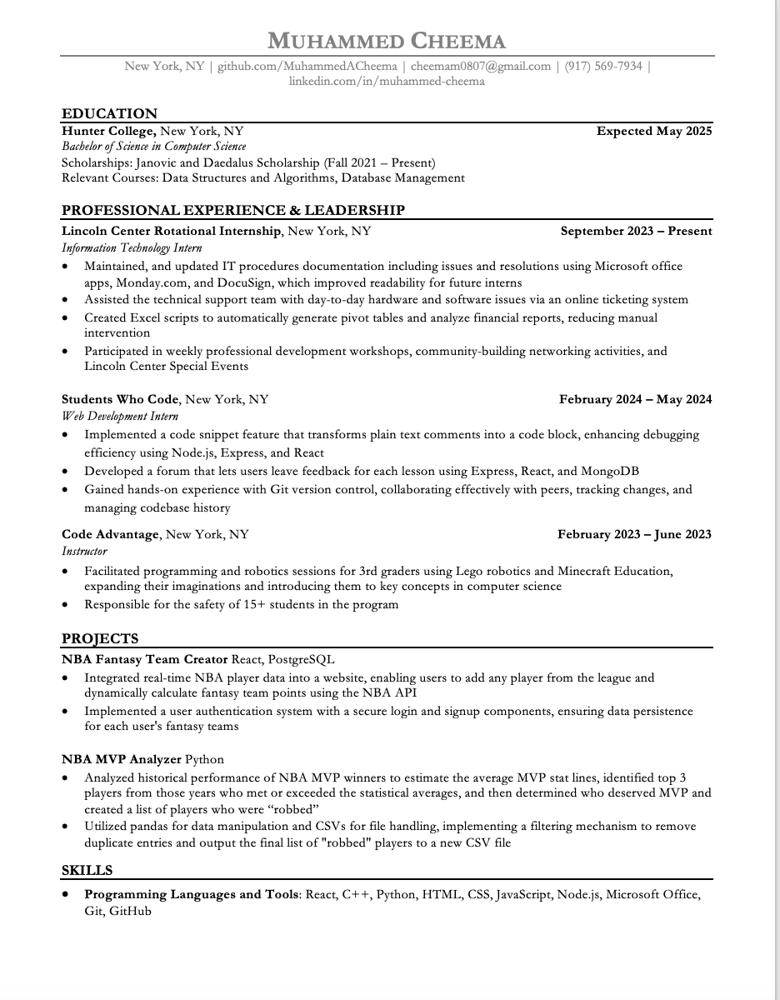

About Me

Hello! 👋🏼 My name is Muhammed Cheema and I’m a Software Engineer.
My passion for technology started during my senior year of high school after taking a computer science class. I enjoyed the creative freedom that came with the coding process. I believe technology and software can help solve real-world problems, and I am excited to help make a difference 👨🏻💻
Some recent things 😎 I've done are:
- Analyzed NBA MVP data with Python and Pandas to identify top players and "robbed" MVP candidates.
- Integrated NBA player data into a Fantasy Team Creator using PostgreSQL and React for dynamic point calculations.
- Created Excel automation scripts at Lincoln Center to generate pivot tables and analyze financial reports.
- Developed a forum for feedback using MongoDB, Express, and React to store and manage user comments efficiently.
I develop data-centric applications that deliver valuable insights by leveraging my technical skills and analytical expertise 🙌🏼 Outside of coding, I enjoy working out at the gym 🏋🏻♂️ playing and watching basketball🏀 and reading a good mystery book📚
Projects

Still have to figure out how to connect this
Resume

Interests

I am passionate about data science and its transformative potential in various industries. With a solid foundation in computer science from Hunter College, where I am pursuing a Bachelor of Science degree, I have developed a keen interest in data structures, algorithms, and database management. My experience as an Information Technology Intern at Lincoln Center and as a Web Development Intern at Students Who Code has equipped me with the technical skills necessary for data analysis and problem-solving. I have hands-on experience with tools such as Excel, Python, SQL, and Git, which I have utilized in projects like the NBA Fantasy Team Creator and the NBA MVP Analyzer.
In my current role, I create Excel scripts for data analysis and have successfully implemented code snippets to enhance efficiency in web applications. These experiences have solidified my desire to delve deeper into data science, focusing on leveraging data to drive informed decisions and innovations. I am eager to connect with professionals and mentors in the data science community to further my knowledge and explore new opportunities. Feel free to reach out to me via LinkedIn or GitHub.
Contact